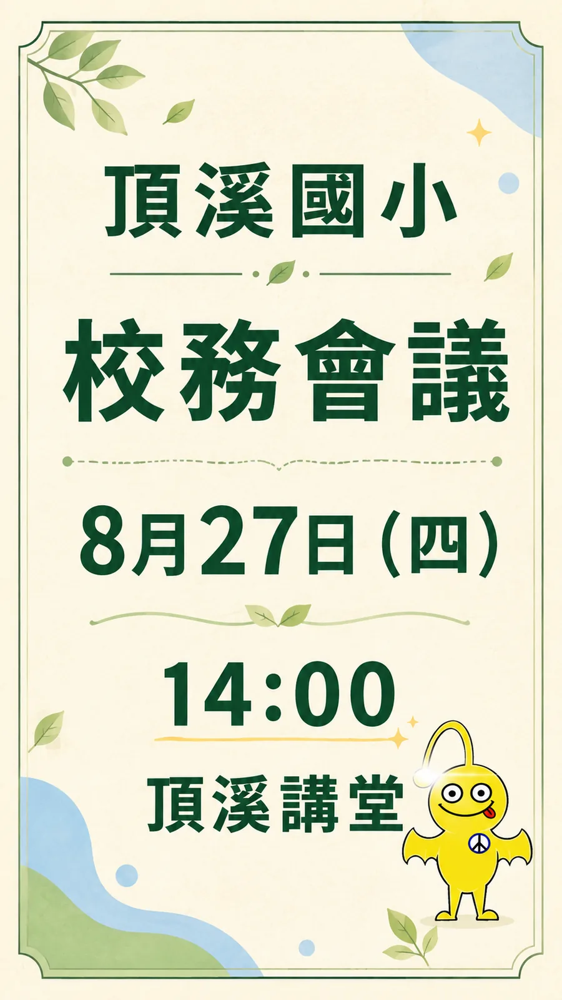

火精靈
適合研習、共備、課程、探索、實作與新工具試用，代表熱情、動力與好奇心。
 頂溪國小
頂溪國小第 7 單元
先請 AI 安裝或套用品牌生圖流程，再從校內區網取得四精靈素材；確認角色後，才用 AI 工作瀏覽器生圖。
第 6 單元先練習把會議資料整理成小卡。第 7 單元要先讓 AI 取得 `dingxi-brand-image-workflow`，才知道怎麼讀校內素材、選精靈與檢查角色。
公開 repo 不放校徽與四精靈原始檔；實際操作時，由「頂溪國小品牌識別生圖」流程從校內區網複製必要素材到本機工作資料夾。

一般行政小卡不用把四隻都放進去；先看通知主題，選能輔助訊息的角色。
適合研習、共備、課程、探索、實作與新工具試用，代表熱情、動力與好奇心。
適合感謝、祝福、品德、團隊、創意與溫暖提醒，代表光明、品格與美好未來。
適合閱讀、分享、說明會、資訊交流與成果發表，代表知識廣闊與溝通分享。
適合服務、志工、環境、永續、校園整理與行動實踐，代表服務精神與實際行動。
這段對話示範的是工作節奏：先補流程，再選角，不急著生圖。
我想把剛剛確認好的會議通知小卡改成 LINE 直式小卡，並加入頂溪四精靈。請先幫我檢查或安裝 `chianwu-hash/dingxi-brand-image-workflow`，再依照裡面的 `dingxi-brand-image` skill 處理。現在先不要生圖。
我會先確認品牌生圖 workflow 是否可用；若尚未安裝，會先協助安裝或帶你完成。完成後，我再從校內區網只複製本次需要的四精靈參考圖與設計意涵，不放進公開 repo。
流程已可用。我讀完四精靈設計意涵後，建議使用火精靈，因為這張通知和教師共備、學習工具有關。請確認是否採用火精靈，或要改成其他角色。
用火精靈就好。請保留原本的小卡文字，改成 9:16 直式，角色放底部，不要遮住日期時間。開啟AI工作瀏覽器，到 ChatGPT 生圖。
ChatGPT 生圖中...我會上傳四精靈參考圖作為角色依據，並要求不要生成校徽、假 logo、QR code、電話或會議連結。
草稿完成。我已檢查會議名稱、日期、時間、地點、文字大小、精靈位置與角色外觀；請你再確認這張圖是否適合發布到 LINE 群組。
文字正確，但火精靈太大了。請縮小到右下角，主標題和時間再放大一點。
這段只負責讓 AI 助手取得品牌生圖 workflow；完成後，就回到自然語言對話。
安裝品牌生圖 workflow
你是協助學校行政承辦人的 AI 助手。請幫我安裝或套用這個 GitHub repo：
chianwu-hash/dingxi-brand-image-workflow
這個 repo 內含：
skills/dingxi-brand-image
我之後會用自然語言請你製作頂溪四精靈 LINE 小卡。請先只完成 workflow / skill 安裝與可用性確認，不要開始生圖。
如果 repo 或 skill 已經可用，請直接告訴我可以使用。
如果你有本機操作或安裝權限，請代我檢查並完成必要安裝；如果你沒有權限，請用我看得懂的步驟帶我完成，不要只丟技術文件連結給我。
完成後，請回覆我：「品牌生圖 workflow 可以使用了。接下來請用自然語言告訴我你要做哪一張小卡。」下面兩句只供參考，請依實際會議內容、發布管道與想要的風格自行改寫。
我想把剛剛確認好的會議通知小卡改成 LINE 直式小卡，並加入頂溪四精靈。請使用「頂溪國小品牌識別生圖」流程，先讀校內素材與四精靈設計意涵，建議適合哪 1 到 2 隻。現在先不要生圖。
我確認用你建議的精靈。請保留小卡文字，做成 9:16 直式 LINE 小卡，角色放底部或側邊，不要遮住日期、時間、地點。開啟AI工作瀏覽器，到 ChatGPT 生圖。